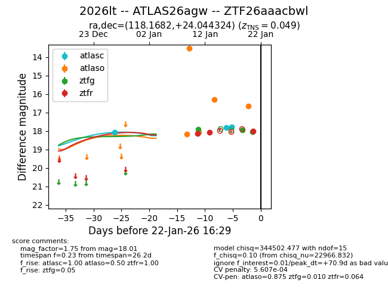
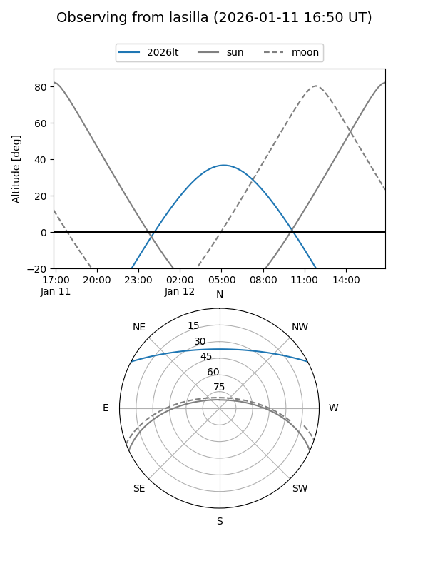
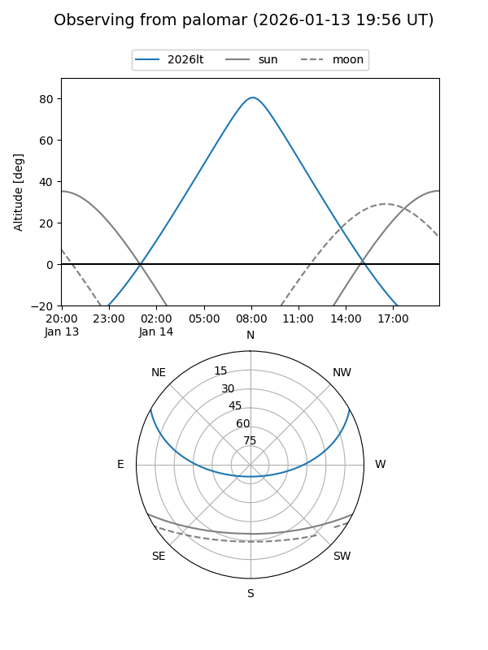
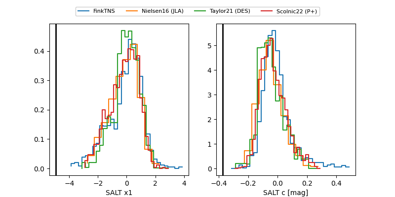

2026lt
Target 2026lt at 2026-01-21 12:16
Aliases and brokers:
FINK: link
Lasair: link
ALeRCE: link
TNS: link
YSE: link
alt names
ZTF26aaacbwl (ztf,fink_ztf)
2026lt (tns,yse)
ATLAS26agw (atlas)
Coordinates:
equatorial (ra, dec) = 118.1682,+24.04432
equatorial (HMS+DMS) = 07:52:40.37,+24:02:39.57
galactic (l, b) = (196.9257,+23.60152)
Flags:
confirmed ia
likely cv
Photometry:
last atlasc=17.76, atlaso=16.31, ztfg=18.03, ztfr=18.01
3 atlasc, 4 atlaso, 3 ztfg, 3 ztfr detections
Lightcurve

Visibility


Additional plots
